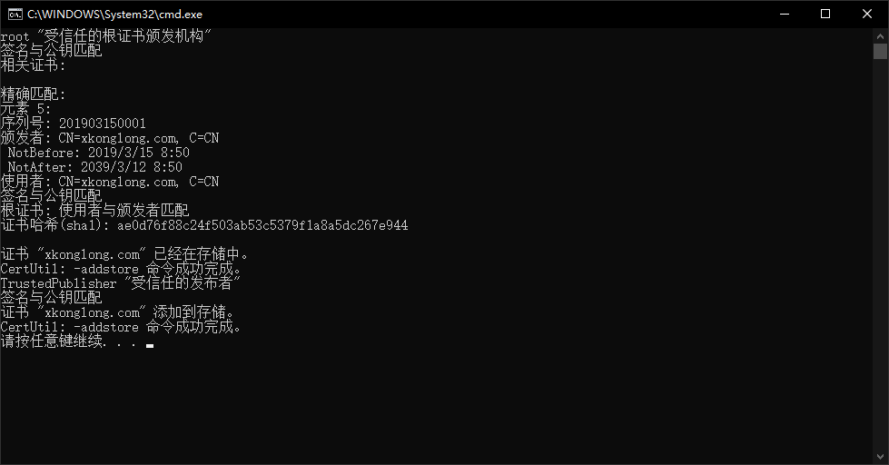

功能简介

根据《党政机关公文格式国家标准》(GB/T 9704—2012)的格式要求，快速设置页面版式、快速设置常用文字格式、插入常用符号、版头、版记、公文页码、红线等。
支持对文字的快速排版，中文首行缩进2字符、删除空白，断句重排等。
支持对文档盖章、可以在文档同目录下生成 PDF/ doc /图片 格式的副本。
可广泛用于各类规范文本的排版。
本插件完全免费开源，承诺不含任何恶意代码。
环境需求
操作系统： win7/win8/win10/win11
Office：
MS Word 2007 (最高支持版本v1.0.8.3,之后版本不再支持2007)
MS Word 2010/2013/2016/2019/2021
MS Word 365
WPS Office 2013/2016/2019专业版
WPS Office 个人版(自v1.8.2.0起支持)
运行库需求: NetFrame4.0 和 vsto
安装说明
首次安装：解压后先运行"首次安装导入证书.bat", 然后运行安装程序。

内网用户：请提前下载并安装附加组件。
杀软报毒
- 作者承诺软件源码开放，不含任何恶意代码。
- 使用360杀毒或360安全管家的用户，若遇到病毒提示，可提交给360官方误杀申报。
- 近期 Windows10 自带杀软误报问题, 目前微软回复已移除病毒库,不会再误报。
- 在保障官网下载的前提下，安装时也可暂时禁用杀毒软件。
下载地址
网盘下载地址: 蓝奏云
网盘下载地址: 城通网盘 密码9561
网盘下载地址: 123云盘
源码下载地址: Github
捐赠支持

软件免费,如果您用的顺手,又愿意支持作者,可通过微信扫描二维码打赏。